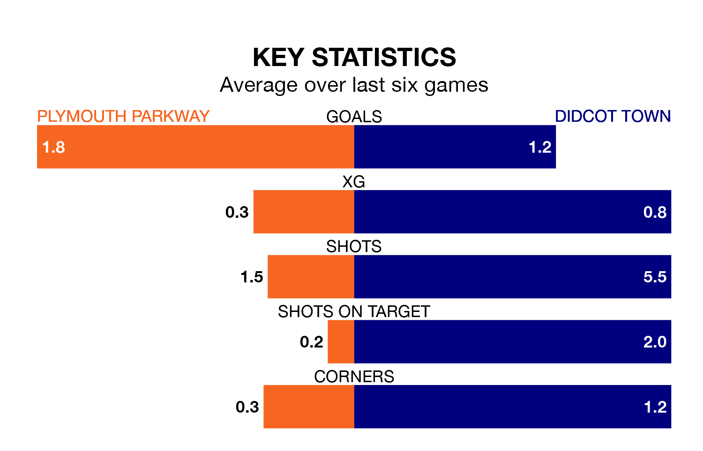

Plymouth Parkway are heavy favourites to keep all three points at home in Tuesday's late kick-off against Didcot Town.
Plymouth Parkway, who sit 16th in Southern League Premier South with 18 games played, are priced at 1.3 to seal victory.
Sitting six places and 11 points behind them in the table, Didcot are 5.9 to win with *Betting Company*, while the draw is at 4.9.
Plymouth Parkway are in good form in Southern League Premier South, with four wins and a draw from their last six games.
With a win and two draws over that period, Didcot's form is much worse – they have taken five points from 18, compared to the home side's 13.
With 25 goals in 23 games so far this season, Town are the league's lowest scorers with 1.1 goals per game. And they are conceding more than average, letting in 57 goals at a rate of 2.5 per game.
Plymouth Parkway, meanwhile, are average scorers, with 1.7 goals per game. They have conceded 1.6 goals per game.
Plymouth Parkway's last match was on December 26, a 1-1 draw against Tiverton Town.
Didcot drew 1-1 with Chesham United last time out, on Saturday.
Updated: 15:34, 08/01/24